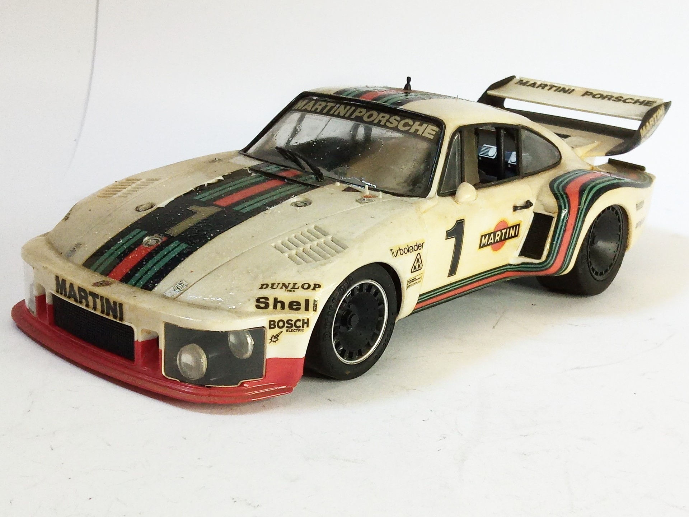
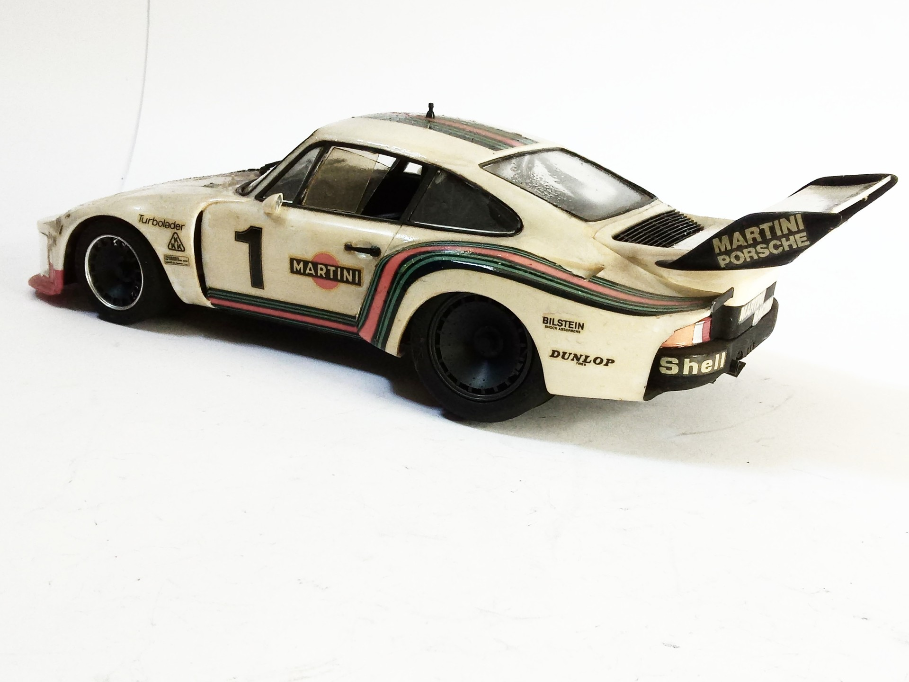

Auto e veicoli stradali · scale model archive
Martini Porsche 935 Turbo
Martini Porsche 935 Turbo — Kit: Tamiya, Scale: 1/20. Unusual 1/20 scale for a car #1/20 #Tamiya

Photo gallery

English description
Unusual 1/20 scale for a car
#1/20 #Tamiya
Descrizione italiana
Insolito 1/20 scala per un’auto.